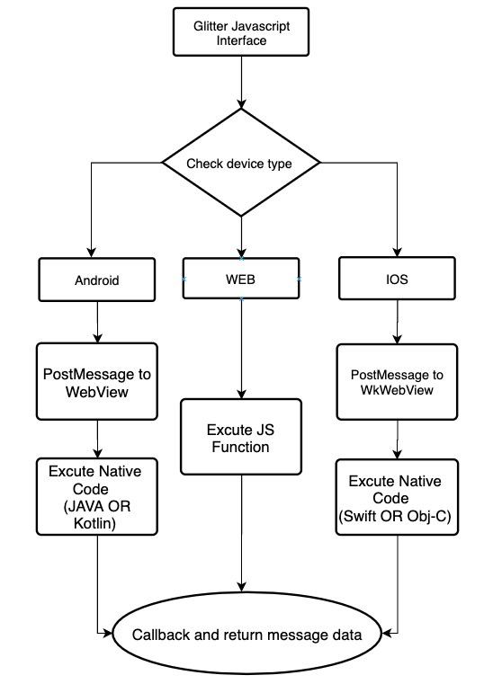

<!DOCTYPE html>
<html lang="en">
<head>
    <meta charset="UTF-8">
    <title>Title</title>
    <script src="../glitterBundle/ControlInstance.js"></script>
    <link href="../glitterBundle/bootstrap2.css" rel="stylesheet">
    <link href="../fontawesome-free-5.15.4-web/css/all.min.css" rel="stylesheet">
    <script src="https://cdn.jsdelivr.net/npm/marked/marked.min.js"></script>
    <link rel="stylesheet" href="https://cdnjs.cloudflare.com/ajax/libs/highlight.js/10.7.1/styles/xcode.min.css">
    <script src="https://cdnjs.cloudflare.com/ajax/libs/highlight.js/10.7.1/highlight.min.js"></script>
    <script src="https://cdnjs.cloudflare.com/ajax/libs/highlight.js/10.7.1/languages/go.min.js"></script>
    <script src="https://cdnjs.cloudflare.com/ajax/libs/three.js/r121/three.min.js"></script>
    <script src="https://cdn.jsdelivr.net/npm/vanta@latest/dist/vanta.net.min.js"></script>
    <link href="../css/article.css" rel="stylesheet">
</head>
<style>
    .caselist img {
        width: 80px;
        height: 80px;
        margin: 10px;
        box-shadow: 0 4px 8px 0 rgba(0, 0, 0, 0.2), 0 6px 20px 0 rgba(0, 0, 0, 0.19);
        border-radius: 10px;
        position: relative;
    }

</style>
<body>
<script>
  lifeCycle.onCreate=function (){
hljs.highlightAll();

  }
  lifeCycle.onCreateView=function (){
    return `
<div class="inner" style="word-break: break-all;">
  <h3 style="font-size: 39px;font-weight: 400;margin-top: 10px;">關於Glitter</h3>
    <div style="height: 1px;width: 100%;background-color: whitesmoke;margin-top: 20px;margin-bottom: 20px;"></div>
    <h4 style="word-break: break-all;">Glitter是由github開源協作者<a href="https://github.com/sam38124" onclick="glitter.openNewTab('https://github.com/sam38124')"> Jianzhi.Wang</a>，所開發的整合式開發框架，此框架借集結了React.js、Vue.js、SwiftUI、Android、WPA....的各項設計優點，
    也同時支援Android/IOS/Web的跨平台開發與MVVM設計模式，幫助開發者在最短的時間，同時構建三方的應用．</h4>
    <br>
    <div class="w-100" style="height: 1px;border-bottom: 1px solid darkred;margin-top: 10px;margin-bottom: 10px;"></div>
    <h4 style="color: darkred;font-size: 30px;">※特點※</h4>
     <div class="w-100" style="height: 1px;border-bottom: 1px solid darkred;margin-top: 10px;margin-bottom: 10px;"></div>
    <h4><i class="fas fa-star" style="color: darkred;"></i> 採用單一HTML，多個IFrame子頁的堆棧管理模式，讓每個頁面之間都能互相共享數據，減少資料的重複撈取動作，避免後端的資源浪費，與畫面加載導致的卡頓問題，
     類似Android的One Activity multiple Frgement的開發模式!</h4>
    <h4 style="margin-top: 10px;"><i class="fas fa-star" style="color: darkred;"></i> 支援MVVM與DSL設計模式與資料雙向綁定．</h4>
     <h4 style="margin-top: 10px;"><i class="fas fa-star" style="color: darkred;"></i> 非常方便且簡潔的撰寫自動化測試代碼．</h4>
     <h4 style="margin-top: 10px;"><i class="fas fa-star" style="color: darkred;"></i> 可同時使用所有JS以及原生套件．</h4>
    <h4 style="margin-top: 10px;"><i class="fas fa-star" style="color: darkred;"></i> 使用原生開發也能調用Glitter插件．</h4>
    <h4 style="margin-top: 10px;"><i class="fas fa-star" style="color: darkred;"></i> 一次撰寫三方運行，相較於傳統開發模式，提升了三倍以上的效率．</h4>
    <h4 style="margin-top: 10px;"><i class="fas fa-star" style="color: darkred;"></i> 透過JS Core進行原生代碼橋接，你可以為你的框架無限拓展其功能，使用官方提供的插件，或自行開發的插件達成所有原生開發需求．</h4>
    <h4 style="margin-top: 10px;"><i class="fas fa-star" style="color: darkred;"></i> 概念為前後端分離的開發模式(這邊的後端代指(Android/IOS)與RestFul API)，來大幅降低技術人員所需的能力要求，前端人員僅需具備H5開發能力，如需要調要原生代碼，再由具備Android/IOS/WEB API 開發能力的技術人員
    ，添加其API來供前端人員進行調用．</h4>
 <div class="w-100" style="height: 1px;border-bottom: 1px solid darkcyan;margin-bottom: 10px;margin-top: 10px;"></div>
<h4 style="color: darkcyan;font-size: 30px;">流程圖</span>
 <div class="w-100" style="height: 1px;border-bottom: 1px solid darkcyan;margin-top: 10px;margin-bottom: 10px;"></div>
<div style="width: 100%;background-color: whitesmoke;border-radius: 10px;border:1px solid lightgray;text-align: center;">

</div>
<div class="w-100" style="height: 1px;border-bottom: 1px solid forestgreen;margin-top: 10px;margin-bottom: 10px;"></div>
<h4 style="color: forestgreen;font-size: 30px;">相關案例</span>
 <div class="w-100" style="height: 1px;border-bottom: 1px solid forestgreen;margin-top: 10px;margin-bottom: 10px;"></div>
   <div id="case" class="col-12 col-12-medium imp-medium caselist  pb-sm-0" style="position:relative;max-width:100%;overflow-x:scroll;display: flex;">
<div style="flex: auto;"></div>
        ${glitter.print(function () {
        var html = ''
        var caseImage = [
            ['Petstagram', '../img/logo_色稿.png'],
            ['高醫校友會', '../images/scholl.png'],
            ['胎壓檢測系統', '../images/ixontruxk.png'],
            ['O-Genius', 'https://github.com/sam38124/JzFrameWork/blob/master/App%20icon/icon_default_logo.png?raw=true'],
            ['奇樂旅行社', '../images/kilo.png'],
            ['百壽里', '../img/biosole.png'],
            ['T-Sport體育平台', 'https://github.com/sam38124/JzFrameWork/blob/master/App%20icon/tsporticon.png?raw=true'],
            ['啡日常', 'https://github.com/sam38124/JzFrameWork/blob/master/App%20icon/coffee.png?raw=true']
        ]
        caseImage.map(function (data) {
            html += `
<div style="display: flex;flex-direction: column; align-items: center;justify-content: space-around;width: auto;">
    
<span class="single-ellipsis" style="font-size: 14px;font-weight: 400;color: black;word-break: break-all;white-space: nowrap;">${data[0]}</span>
</div>
                    `
        })
        return html
    })}
<div style="flex: auto;"></div>
        </div>

</div>


    `
  }

</script>
</body>
</html>